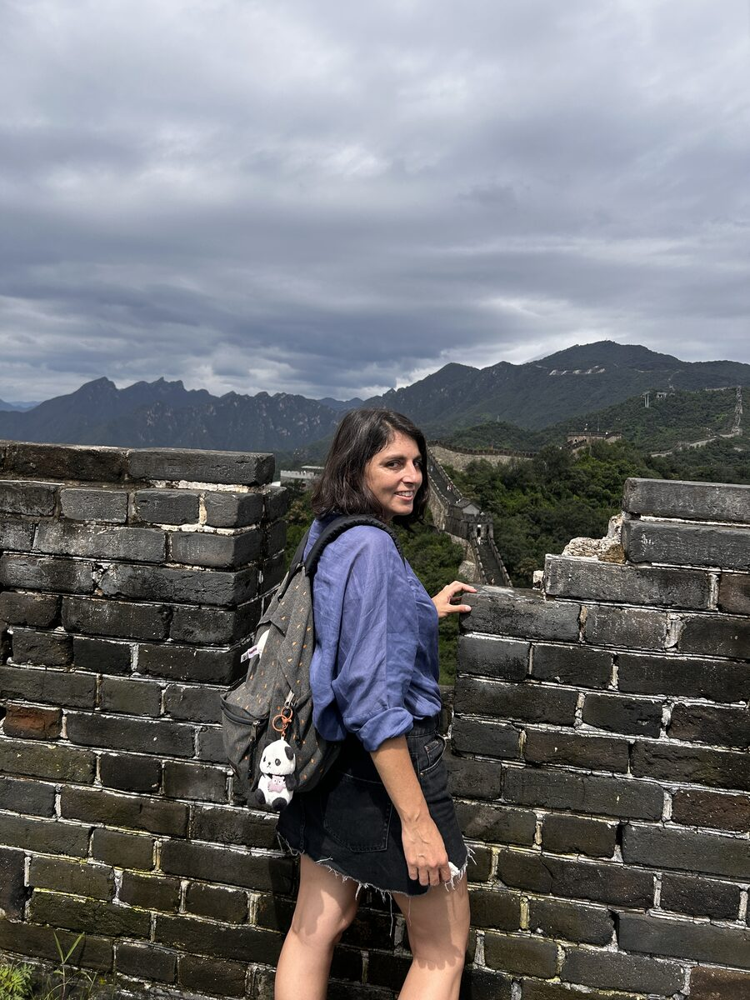
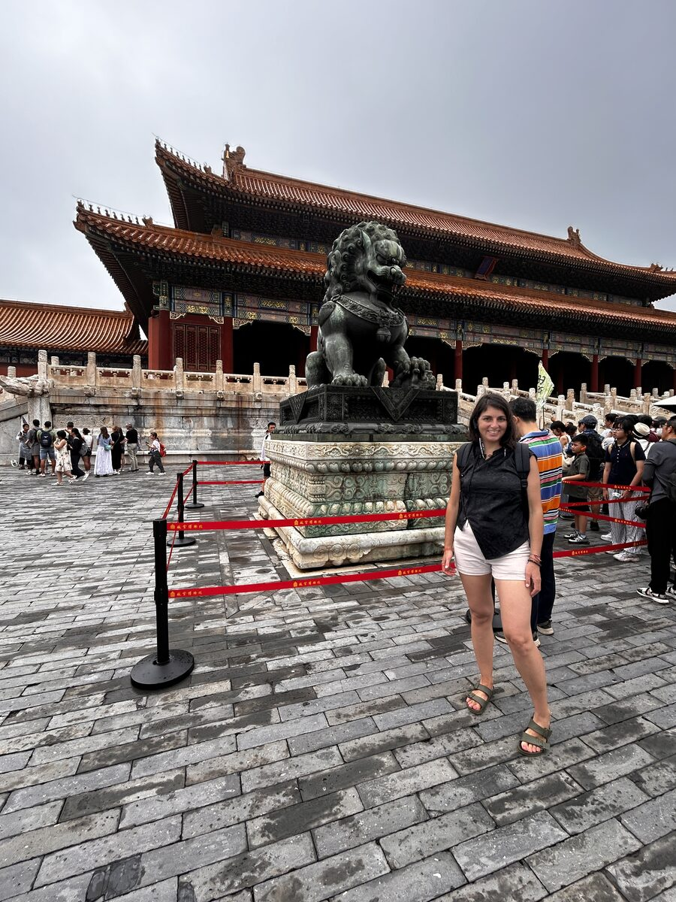

Las murallas que no se ven
Continuando la serie sobre China
Hace ya más de una semana que volví de China.
Siento que algo ha cambiado en mí. En cierta forma, todos los viajes tienen ese poder de transformación. Aunque haya quienes prefieran no tomarlo.
Recuerdo una escena al llegar al aeropuerto de Pekín.
Una familia española conoció a una pareja que también terminaba su viaje y les preguntó:
—¿Qué os ha parecido China?
La respuesta fue inmediata.
—No podemos más de los chinos.
No era la primera vez que escuchaba algo así. A la vuelta de Egipto viví una conversación muy parecida. Allí la frase fue:
—Todos los egipcios son unos asquerosos.
Y siempre que escucho comentarios así me invade la misma sensación.
Qué facilidad tenemos para convertir millones de personas en una sola.
Como si un país entero pudiera resumirse en una frase.
Como si un mes de viaje bastara para conocer a un pueblo de más de mil cuatrocientos millones de habitantes.
Entonces recordé aquellas gafas de las que os hablaba al principio de esta serie.
Las gafas con las que elegimos mirar el mundo.
Y pensé que, quizá, el viaje no cambia tanto los lugares como las gafas con las que regresamos a casa.
Los últimos días en China tampoco fueron poca cosa.
Xian me llevó a un pasado que, por momentos, parecía un cuento y, por otros, una pesadilla. Un pasado de emperadores, de guerras, de poder absoluto y de una historia tan inmensa que resulta imposible abarcarla en unos pocos días.
Después llegó Pekín.
Y, curiosamente, fue una de las ciudades que más me sorprendió.
La Gran Muralla era mucho más impresionante de lo que había imaginado. Caminando sobre ella no podía dejar de pensar en todo lo que el ser humano ha construido para protegerse del otro.

Después recorrí la Ciudad Prohibida.
Kilómetros de patios, puertas y muros levantados para separar a unos pocos privilegiados del resto del mundo.

Y entonces pensé que quizá seguimos construyendo murallas.
Ya no siempre son de piedra.
A veces son fronteras.
A veces son ideologías.
A veces son prejuicios.
Y muchas veces las levantamos dentro de nosotros mismos.
Quizá esas sean las más difíciles de derribar.
Porque podemos recorrer medio planeta y seguir mirando a los demás desde el mismo lugar.
China me ha regalado templos, montañas, ciudades imposibles y algunos de los paisajes más impresionantes que he visto nunca.
Pero, cuando cierro los ojos, curiosamente no son esos lugares los primeros que aparecen.
Recuerdo a la mujer que nos abrió las puertas de su casa para compartir el té.
Recuerdo las partidas de mahjong en los parques.
Los niños que nos observaban con curiosidad.
Las risas alrededor de un hot pot en Chongqing.
Los taxistas cantando.
Las dueñas de pequeños hoteles preocupándose de que encontráramos el camino correcto.
Supongo que eso es viajar.
Salir buscando lugares y volver recordando personas.
No sé si algún día terminaré de comprender China.
De hecho, cuanto más he aprendido sobre este país, más consciente soy de todo lo que aún desconozco.
Pero sí sé una cosa.
Vuelvo con más preguntas que respuestas.
Y, curiosamente, eso ya no me incomoda.
Al contrario.
Creo que es uno de los regalos más bonitos que me llevo de este viaje.
Porque, al final, viajar nunca consistió en encontrar certezas.
Consistió en aprender a mirar el mundo con un poco más de curiosidad.
Y con muchas menos murallas.